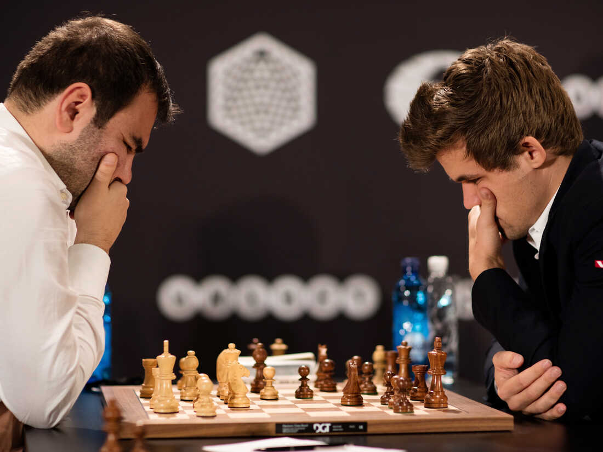
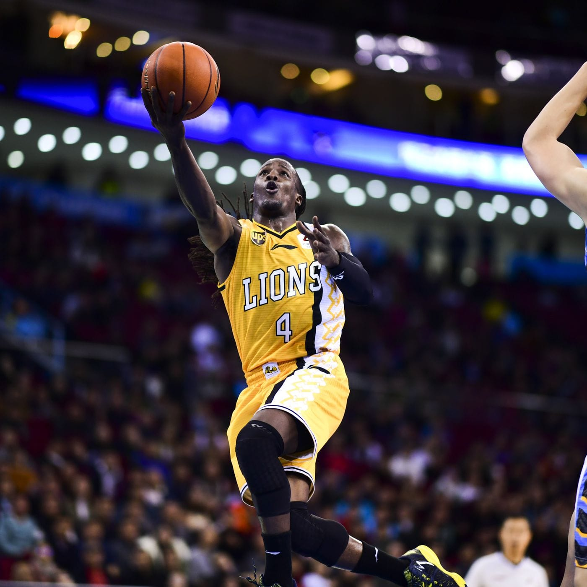

I am the player of different kinds of board games, but Chess is the game the i prefer over others. I started playing chess at an early which made it my best hobby. Back in high school i was a champ of the ditrict bacause i was selected as best ten players in Lesotho so i had to stand for my district.
When it comes to spords, Basket bala if my favourite. basket ball is the sport that trains all parts of the body. Now i am a trainer for Cenez high school basket ball tea.If you are a basket ball player there is no need to go the gym, by just practicing, you have done it all.
